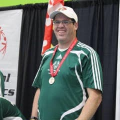
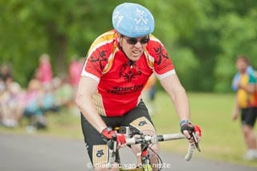

Member Spotlight: Adam Hays
By Harris Goldstein | October 25, 2020

This edition of our Member Spotlight features Walk-A-Wish member Adam Hays. Adam is a Special Olympics athlete who has been involved with the organization for over 2 decades! Check it out!
“I currently live in Frederick, Maryland and I have been involved with the organization for 25 years! I work as a Digital Media Coordinator for Special Olympics Maryland. I get to create short videos and help with social media to spread the message of our inclusive movement. Not only do I work for this great organization, but I am also a Special Olympics athlete!"
“I compete in 5 sports throughout the year, downhill skiing, basketball, swimming, and my favorite sports, cycling and soccer. Not only that, but I am an Athlete Leader, where athletes like me get to go around our communities, sharing and spreading the message of Special Olympics, recruiting potential athletes, volunteers, and more as we tell our personal stories.”
One of Adam’s most memorable moments came when he got the special opportunity to take part in an opening ceremony. “I got to help run the flame of hope at the Special Olympics World Summer Games in Athens, Greece in 2011! That’s something I’ll never forget.”
“Through all of this, I have had 34 major brain surgeries, due to a life-threatening condition known as Hydrocephalus, or water on the brain. I have had to go into the hospital many times throughout my life to replace my shunts, but I don’t let my condition or my intellectual disability run my life!”
Adam heard about Walk-A-Wish from a co-worker several years ago. “My co-worker mentioned at a meeting that there was a new app that we could use to help raise money for our organization and just another way of helping to make a difference. So, I immediately downloaded the Walk-A-Wish app and have been using it non-stop since!”

“I support The Special Olympics because it gives people with intellectual disabilities, like myself, a chance to show through sport that opportunity is not limited by disability. My intellectual disability does not define my life and helps show if you give us a chance to succeed we can be contributing members of society. It has given me confidence in myself, a voice in our community, and made me realize how much I love to ride my bike, defend as the “Intimidator” in soccer, or fly down the hill on my skis as I go for the gold!”
When asked about Walk-A-Wish, Adam responded, “I use Walk-A-Wish because it is an easy way to support Special Olympics while I exercise. When I ride my bike, the app keep track of my mileage and it’s really cool to see I raise money each trip. Who knew exercising had more benefits than just keeping healthy! I’ve used this app since 2014 and since then every little cent donated has made a huge difference that will help the athletes in Special Olympics lead the way into a more inclusive society, all through sport!”
Wondering what a typical workout looks like for Adam? “A typical training workout consists of riding my bike 3-4 times a week with a goal of 20 miles each trip. I average around 1,500 miles a year on my bike! I love to take in the scenery and stop and read all the signs in my area so I know where I am at. You can also see me walking 2-4 miles at a time when I’m not riding my bike. But, I am in the gym a couple days a week when it gets hot and sticky as it seems to do in the Mid-Atlantic weather. It all pays off though when you see me standing on top of the podium with a medal around my neck!”
His training ultimately proved worthwhile as Adam won an incredible 2 gold medals at 2014 Special Olympic Games, one in the 5K road race and one in 10K road race!
Adam, good luck in all future endeavors and keep up the amazing work!